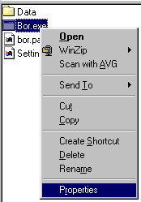
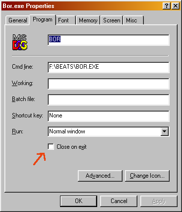

Common mistakes
When I try to edit my mod BOR just crashes/ I don't see error messages.
BOR is unlikely to just crash, it probably encountered an error in your mod and exits the game, displaying an error message.
In some windows configurations, windows closes all finished dos programs immediately, preventing you to see the error message. To make sure you can see the error messages do the following:
1. right click on bor.exe, and select properties.

2. click on the tab 'program' and make sure that the check box 'close on exit' is unchecked.

I made a new enemy, but when I turned him into a hero it won't work.
A number of things may cause this problem. First a hero has more moves, which need to be in the character.txt (e.g. kula.txt). So when making a new hero, first copy an existing text file of a hero and start replacing frames with your own. This way BOR will always find all the moves it expects.
Also make sure the character has been given the proper 'type' in the character.txt (type player).
Finally all new characters need to be declared in the models.txt.
BOR won't use my gifs.
BOR can't handle long file names, so give files a name consisting of a maximum of 8 characters (e.g. 12345678.gif).
The colours of my character are displayed wrong.
BOR uses a fixed palette for characters, so you can't use colours that are not in the palette. So next time save the gifs using the bor palette (data\pal.act).
-----------------------------------------------------------------------
http://www.senileteam.com
-----------------------------------------------------------------------